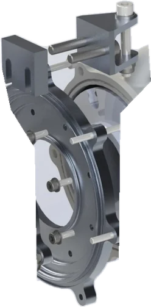
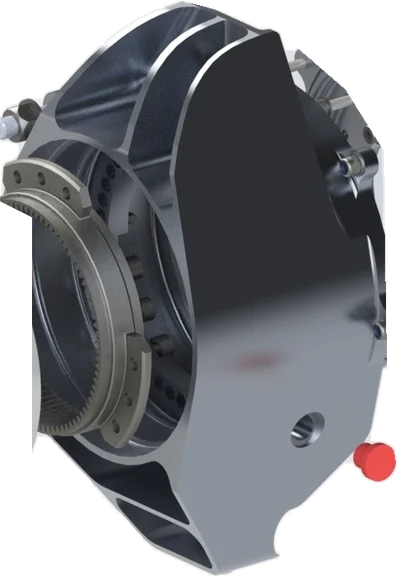
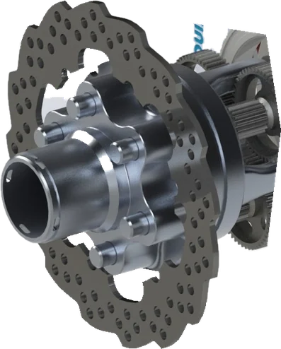
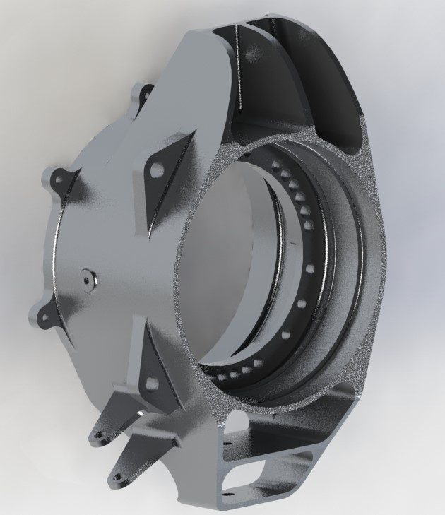
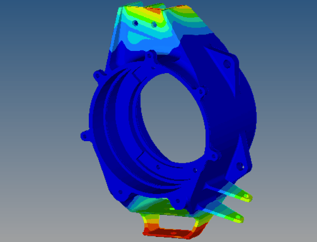
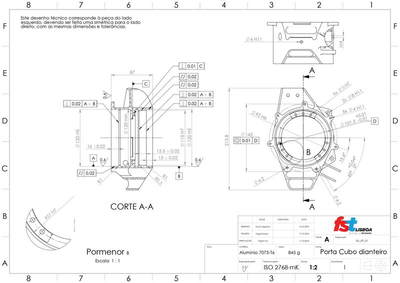
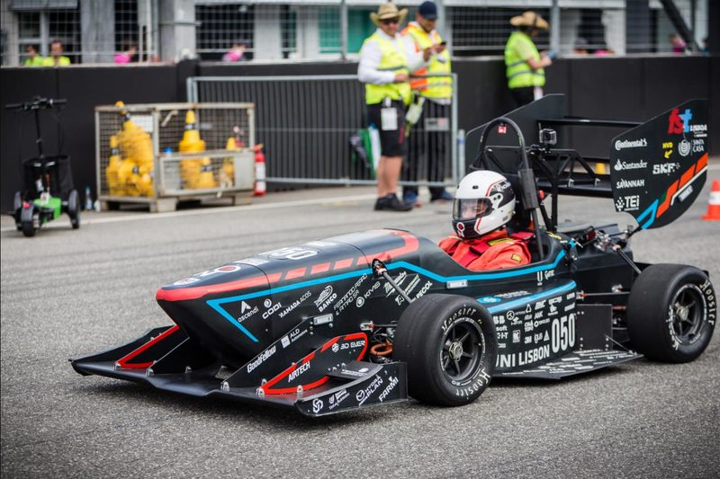
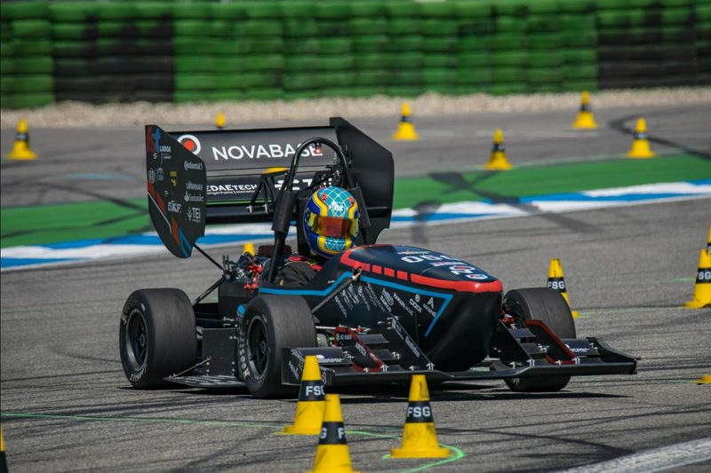
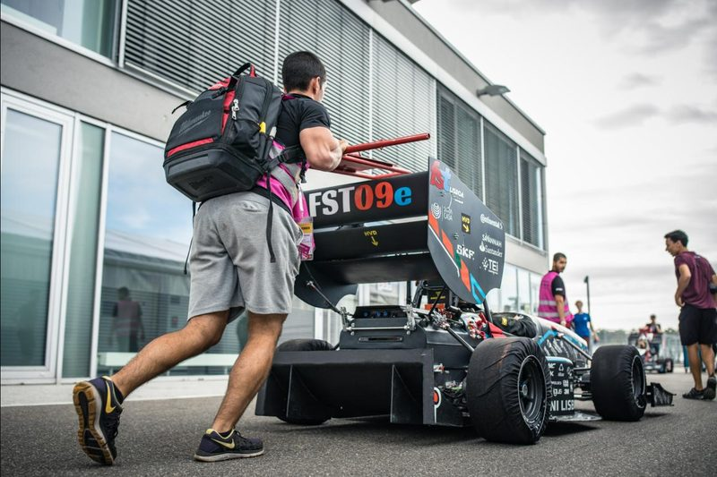
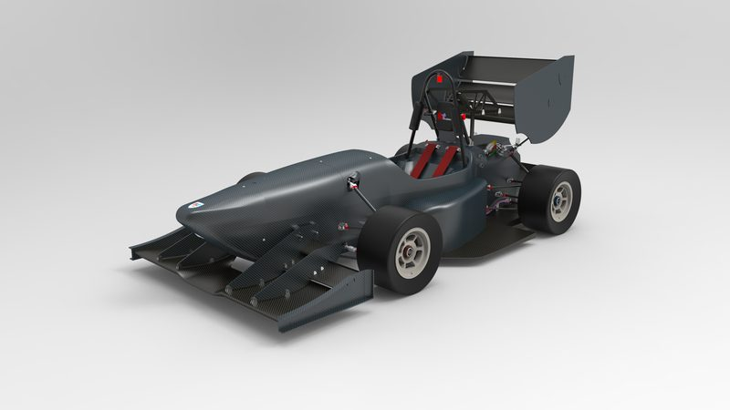

FST09e upright and hub
Two structural parts at the corner of a four-wheel-drive electric race car, from CAD and FEA through to a machined part.
Two structural parts at the corner of a four-wheel-drive electric race car, from CAD and FEA through to a machined part.






| Item | Part | Note |
|---|---|---|
| 1 | Hub | Designed by me |
| 2 | Brake disc | Floating, on six bobbins |
| 3 | Brake caliper and pads | AP Racing |
| 4 | Planetary gearset | Sun gear and three planets |
| 5 | Outboard bearings and seal | 61819-2RS1 |
| 6 | Upright | Designed by me · 7075-T6, 5-axis CNC |
| 7 | Motor mounting plate | |
| 8 | AMK in-wheel motor | With cooling jacket |
Formula Student teams design, build and race a new car every year. FST09e was FST Lisboa’s ninth: an electric car with an AMK motor in each wheel.
I joined the suspension department because my coursework felt too theoretical and I wanted to make something real. I was given two parts: the upright and the hub.
The upright connects what rotates to what doesn’t: the drivetrain and hub on one side, the suspension on the other. It is one of the most crowded parts of the car. Inside it sit the hub, the planetary transmission, oil seals and bearings; on the outside it carries the brake caliper, the motor and the suspension pick-up points.
The hub carries the wheel and brake disc and runs on the bearings inside the upright.

To make sure the upright would survive the loads it sees in service, I ran finite element analyses in HyperMesh across several load cases.

The upright was machined from 7075-T6 on a 5-axis CNC at a sponsoring company. Making it manufacturable took several rounds with the sponsor, adjusting the design to what their machines and tooling could do. The technical drawings in Fig. 4 were the result. I also fed into the car’s bill of materials.

Overall at Formula Student Germany 2019, Hockenheim.
Overall at Formula Student Spain 2019.
Overall at Formula Student East 2019.
FST09e met its targets and was the best-scored car the team had built up to then. The biggest lesson was to study the previous cars properly before starting: most of the problems I avoided were ones earlier designs had already run into.



